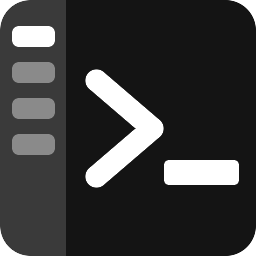
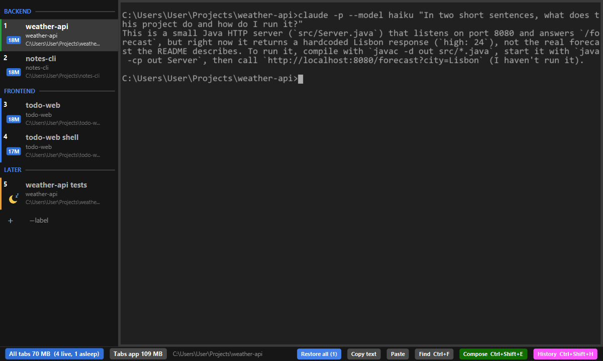
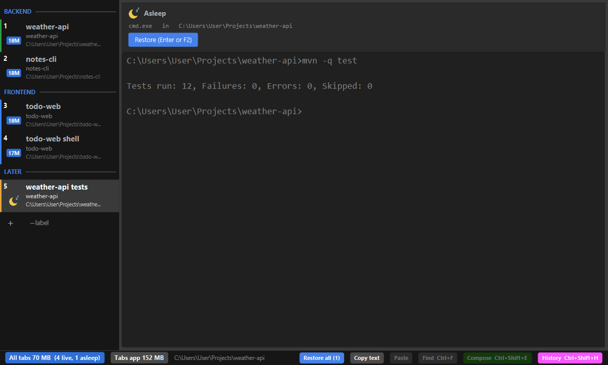
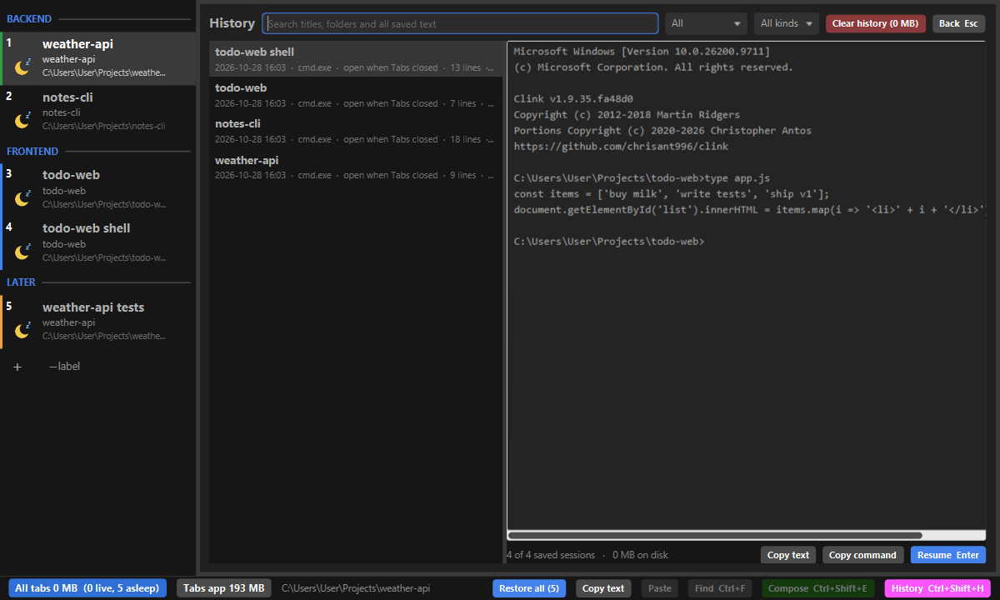
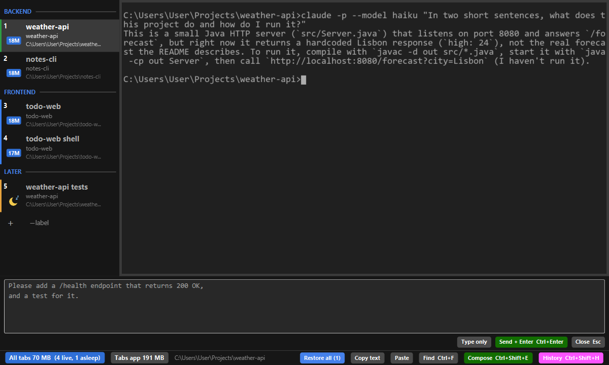

TabsFxTerminalTabs, from fxterm
A Windows terminal with vertical tabs, made for long sessions with AI coding agents such as Claude Code. Tabs sleep and wake like a browser's, every session can be found again in History, and several windows share one process.

What it does

Tabs that sleep and wake
Close Tabs and every tab is saved. Start it again and each tab comes back asleep, with its text, and wakes when you press Enter. A Claude Code tab wakes as the same conversation.

History
Every closed or sleeping tab is kept with its text. Search all of it, preview it, copy it, or resume it in a new tab.

Compose box
Write a long request in a real editor under the terminal, then send it to the tab with Ctrl+Enter.
And more
- Several windows in one process: drag a tab out to open a new window.
- RAM per tab and for all tabs, so a heavy session stands out.
- Colours, separators, drag to reorder, keys for everything.
- Font size with Ctrl+= / Ctrl+-, Ctrl+wheel or a pinch.
- Tabby-compatible command line:
fxterm-tabs open <dir>,fxterm-tabs run <command>.
Install
Download fxterm-tabs.exe from the latest release and run it. It needs Java 25 or later. The exe fetches its program file from the same release and checks it against a SHA-256 built into it; fxterm-tabs.exe -Xjr:update moves to a newer release.